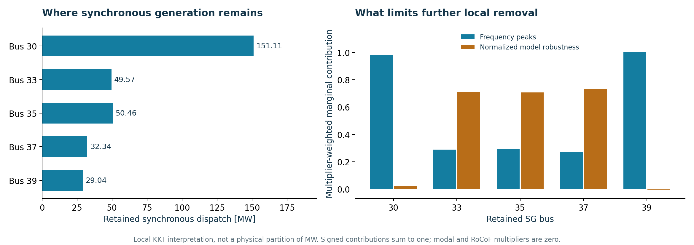
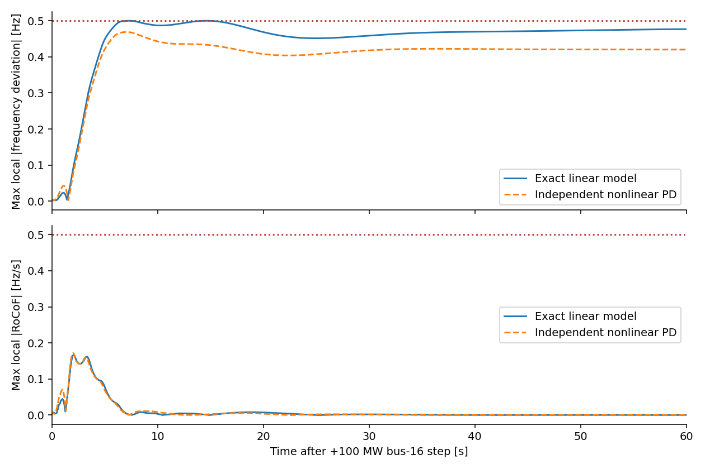
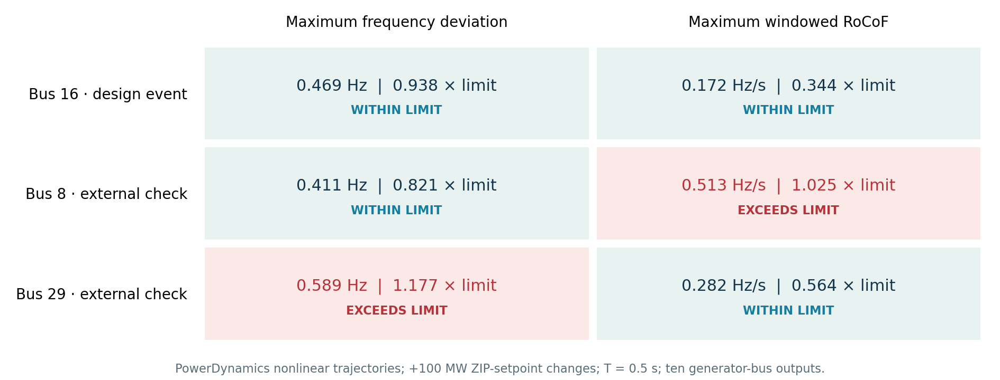

Beyond Nodal Damping · Working concept · 1 October 2026
Where Should Synchronous Generation Remain?
Joint SG–GFL and PLL design with numerical local optimality and nonlinear event validation.
Central finding. In this IEEE-39 local design, frequency peaks and normalized model robustness limit further removal of synchronous generation. The spectral-margin constraint is slack. The remaining generators serve different marginal roles.
94.22%of original dispatch assigned to GFL
312.52 MWsynchronous dispatch retained at five buses
25 variablesfive retentions + twenty local PLL gains
A model-specific research result. Fixed design event: +100 MW ZIP-load setpoint at bus 16.
Causal phase measurements use T = 0.5 s at ten generator buses. This is a content concept, not the final competition poster.
1. Co-design a feasible replacement
minε,Kp,Ki Σ Pi0 εi
Enforce the full physical spectrum, a normalized robustness requirement, and frequency / RoCoF peaks of the analytic model. Preserve competing time-domain peaks as separate active constraints.
The numerical local certificate applies to the analytic security problem on the declared support. Nonlinear validation checks the selected design; it does not establish optimality for nonlinear trajectory constraints.
2. Explain each retained location
Frequency-peak multipliers dominate at buses 30 and 39. The normalized model-robustness constraint dominates at buses 33, 35 and 37. The modal-margin and RoCoF multipliers are zero at this point.
These are local KKT contributions, not a new law, causal proof, physical shares of reserve, or prices transferable to another grid. All twenty gains are at their declared bounds.

Left: the retained dispatch. Right: multiplier-weighted contributions to the local stationarity condition. Negative contributions are retained.
3. Predict, then validate the nonlinear response

Unmodified source figure from Q2B/CERTIFIED_SEARCH. The horizontal coordinate is time after the event.
The displayed load step is a ZIP-setpoint change; effective demand varies with voltage.
PowerDynamics peaks: |Δf| = 0.468755 Hz and |RoCoF| = 0.171771 Hz/s; both declared limits are 0.5.
4. Test the design outside its target event

The two external failures remain visible. An all-location or all-input guarantee has not been demonstrated for this design.
Numerical evidence behind the design
- KKT, LICQ and positive reduced Hessian at the local point.
- Riccati / bounded-real inequality checked at 256-bit precision across all frequencies.
- Physical matrices, trim and 143 finite poles reconciled with PowerDynamics.
- Selected nonlinear event validated after freezing the design.
Numerical checks use declared tolerances, not outward-rounded formal proofs.
The robustness norm acts on a frozen-coordinate reduced operator; it is not a load-disturbance envelope.
The global lower bound is still zero.
Reproducible design values
| Bus | SG MW | Kp | Ki |
|---|
| 30 | 151.11 | 7.854 | 986.960 |
| 31 | 0.00 | 125.664 | 61.685 |
| 32 | 0.00 | 125.664 | 986.960 |
| 33 | 49.57 | 7.854 | 986.960 |
| 34 | 0.00 | 125.664 | 986.960 |
| 35 | 50.46 | 7.854 | 986.960 |
| 36 | 0.00 | 7.854 | 986.960 |
| 37 | 32.34 | 7.854 | 986.960 |
| 38 | 0.00 | 7.854 | 986.960 |
| 39 | 29.04 | 125.664 | 61.685 |
PLL gains are in the frozen model convention. They do not add a sustained active-power resource. Hard converter-current protection is not modeled.